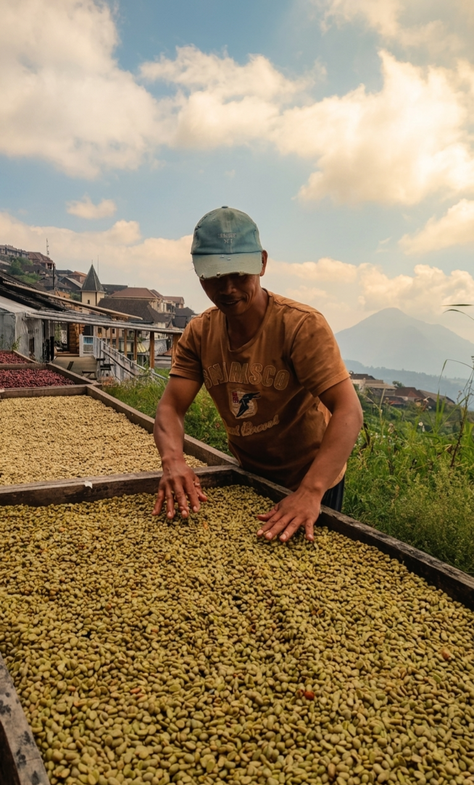

-Photoroom.png)
Dari robusta yang kuat, arabika yang kompleks, hingga cascara yang menyegarkan, temukan karakter minuman yang sesuai dengan selera Anda.

Kanduman Cascara & Coffee adalah produsen kopi spesialti dari Jawa Tengah, Indonesia, yang berdedikasi untuk menghadirkan kopi Robusta, kopi Arabika, dan cascara Arabika berkualitas tinggi kepada pelanggan di seluruh dunia. Kopi kami berasal dari dua wilayah tanam unggulan: perkebunan Robusta di Kandangan, Temanggung, yang terletak di ketinggian sekitar 800–1.200 meter di atas permukaan laut (mdpl), dan kebun Arabika di Ngaduman, Salatiga, yang berada di antara 1.200–1.500 mdpl. Lingkungan dataran tinggi ini, berpadu dengan tanah vulkanik yang subur dan iklim pegunungan yang sejuk, menciptakan kondisi ideal untuk menghasilkan kopi dengan karakter dan konsistensi yang luar biasa.
Kopi Robusta dari Kandangan dikenal dengan body-nya yang tebal, aroma yang kaya, catatan rasa cokelat, serta keasaman rendah yang seimbang, menjadikannya sangat bernilai bagi penyangrai (roaster) dan bisnis kopi yang mencari profil rasa yang kuat dan khas. Sementara itu, kopi Arabika yang dibudidayakan di Ngaduman menghasilkan aroma floral yang elegan, rasa manis buah alami, keasaman yang cerah, dan hasil akhir yang halus (smooth finish) berkat ketinggian tanam yang lebih tinggi dan praktik budidaya yang teliti. Selain biji kopi, kami juga memproduksi cascara Arabika premium, minuman mirip teh yang manis alami dan terbuat dari kulit ceri kopi yang diproses secara hati-hati, menawarkan catatan rasa madu, buah-buahan kering, dan sitrus yang lembut.
Di Kanduman Cascara & Coffee, kami memadukan pengetahuan pertanian tradisional dengan proses pasca-panen yang ketat dan kontrol kualitas untuk memastikan setiap produk memenuhi ekspektasi pasar kopi spesialti. Dari dataran tinggi Jawa Tengah hingga ke pelanggan di seluruh dunia, kami berkomitmen untuk menjaga kualitas, kesegaran, dan keaslian sambil menyediakan solusi pengemasan dan pasokan yang fleksibel bagi eksportir, roaster, kafe, grosir, dan pelanggan ritel. Melalui setiap panen, kami dengan bangga menampilkan cita rasa unik dan warisan kopi yang kaya dari Kandangan dan Ngaduman.
Premium coffee and cascara sourced directly from Central Java's highlands with transparent supply chains, flexible purchasing options, and reliable export services.
Jelajahi koleksi Robusta, Arabica, dan produk Cascara kami — tersedia per ton untuk wholesale atau dalam kemasan retail.
Hubungi kami untuk pemesanan, konsultasi produk, dan kerja sama bisnis.
Lihat Koleksi Kanduman